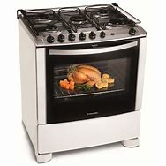

R$ 200
e você tá procurando por um fogão novo pra sua cozinha, dá uma olhada nessa opção. Esse Fogão a Gás 4 bocas da Esmaltec. Ele é um fogão de Piso com design em vidro temperado moderno que valoriza sua cozinha e deixa a limpeza fácil, tornando o preparo das receitas preferidas da sua família ainda melhor. O fogão CARIBE tem 4 bocas e é na cor Preto, tem acendimento automático e painel. O Forno Simples possui boa capacidade interna, são 53,2 litros. Sem falar nos 1 queimador família 2,0kW e 3 queimadores pequenos 1,7kW, forno limpa fácil, novas trempes e pés altos e com novo design, que fica mais fácil atá na hora de fazer a limpeza.